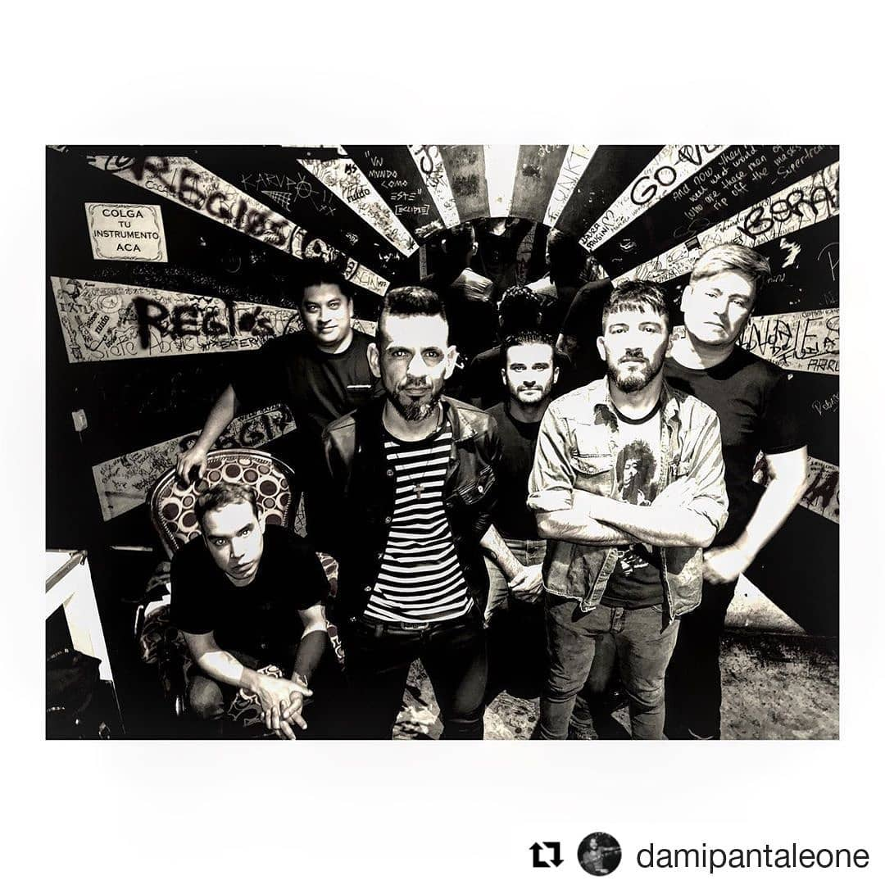
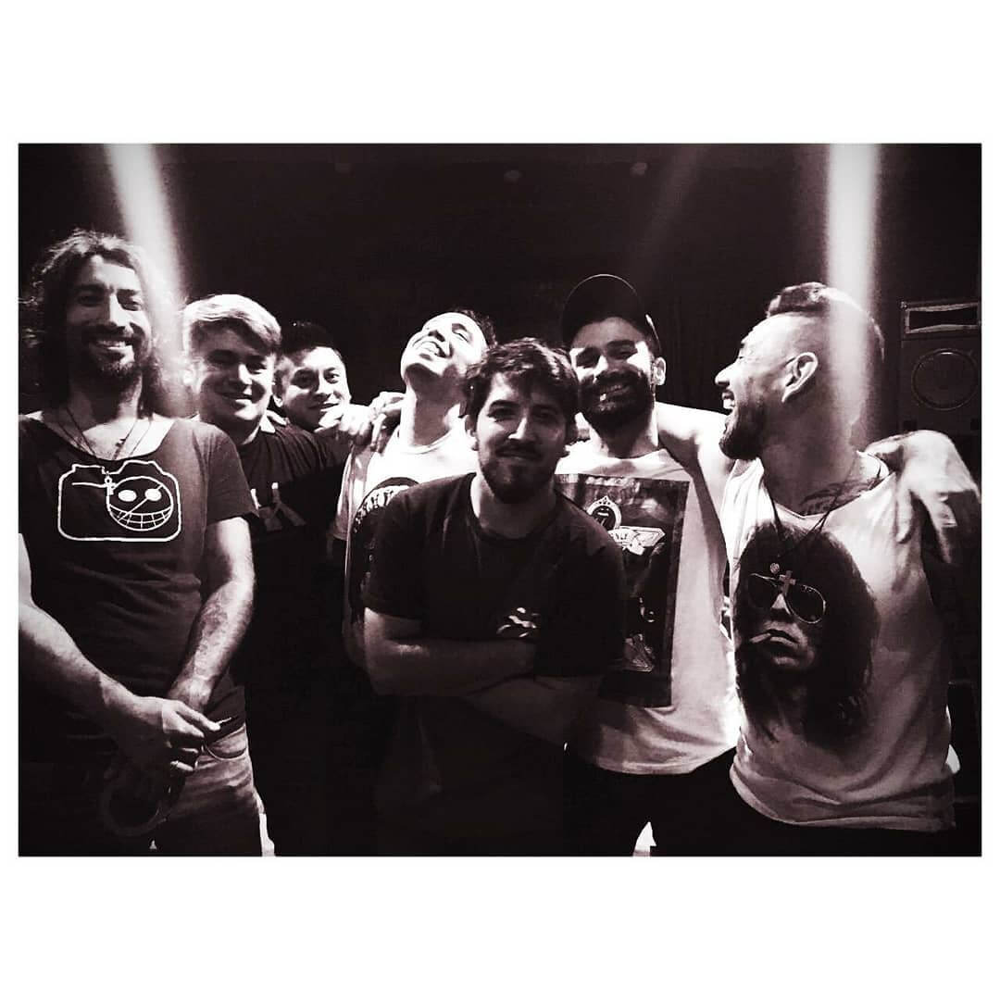
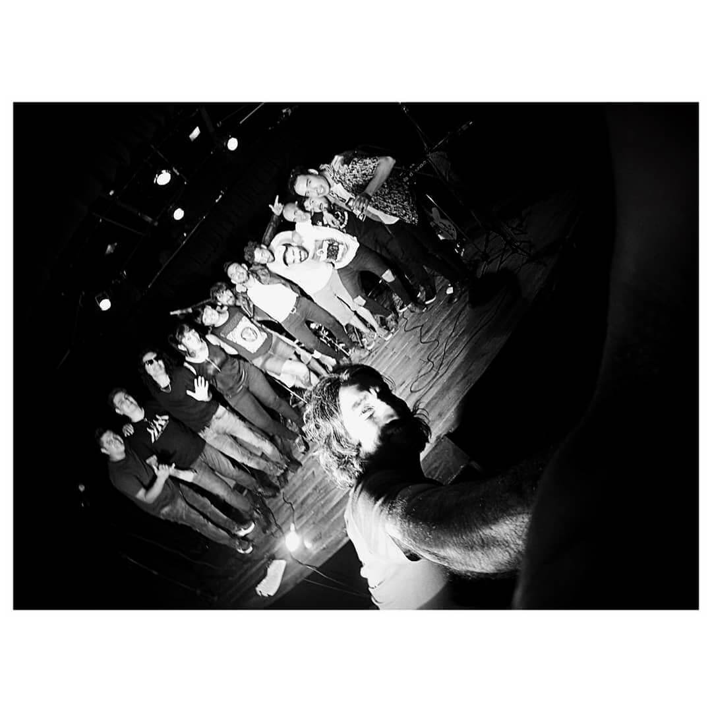

Nosotros
Temporada de Lobos nace en 2017 en la localidad de San Justo cuando Adrián Figueredo deja Nil Obstat (su banda de entonces) y forma un proyecto de rock con él en voz líder y guitarra, Damián Borgognoni (bajo) Alejandro Manzilla (guitarra) Alejandro Chamorro (teclados) Matías Ruiz Mancilla (batería y percusión) Un año después se suma Marcelo Santillán (guitarra y coros).
En marzo de 2017 se da forma a los temas compuestos por Adrián Figueredo y se graba el primer simple “Vas Perdido” con arreglos de Alejandro Manzilla y la producción artística de Martín Méndez de Los Caballeros de la Quema. Pronto esta canción se transforma en el primer videoclip de la banda, filmado y producido por Martín Velasco Bertolotto y dirigido por Damián Pantaleone para La Taberna Producciones. El debut en vivo es en este mismo año, en Lucille (Palermo) iniciando el recorrido del habitual circuito under de lugares como Makena, Strummer, Berlina Vorterix en CABA y en zona oeste en los tradicionales Mr. Jones, Circus, La Cúpula, Oeste Rock.
En 2018 en el emblemático Estudio Romaphonic (ex Circo Beat) se graban las bases de batería, bajo y guitarras de las canciones que formaran parte de “Buscando el camino” Esta vez la producción artística y arreglos están a cargo de Alejandro Manzilla y Esteban Del Río como ingeniero de grabación, mezcla y masterizado. En este proyecto participaron, Sol Borsini, Damián Pantaleone, Brenda Cuesta, Mercedes Núñez en voces, Sol Pereyra en trompeta, Juan Cruz Arin en trombón, Gustavo Zorry (Jóvenes Pordioseros) en Teclados, Beto Olguín (Los Pérez García) Voces en “Nena” Carolina De La Presa como compositora de Nena y Cuando.
Entre 2018 y 2020 la banda recorrió innumerables escenarios de CABA, Tandil y Gran Bs As, dónde se destacan las participaciones como teloneros de Los Pérez García en Woodstock (San Justo) y La Franela en La Trastienda. Se filmaron los videos de “Cuando” “Nena” y “Cómo hago” todos a cargo de Damián Pantaleone para La Taberna Producciones Buscando el Camino finalmente sale en octubre del 2021, siendo presentado en Makena.
Luego de un impasse, en noviembre de 2023 la banda vuelve a los ensayos para empezar en enero de 2024 tocando nuevamente en Mr. Jones, con la mente puesta en tocar en diferentes lugares y componiendo el segundo disco con la idea de grabarlo a finales de año